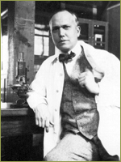
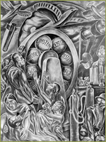

The Preclinical Sciences at Berkeley

Although the Great Depression halted any plans for complete reunification, there were some bright spots for medical education and research on both sides of the bay. In their disillusionment following the Rockefeller funding debacle, several key science faculty left UC, but the void was soon filled with more local talent. Biochemist Carl L. A. Schmidt was made chair of biochemistry and began his research into the chemistry of amino acids and proteins. With the loss, first of Jacques Loeb, and then Robert Gesell, the Physiology Department went into a period of decline. In contrast, the Department of Anatomy at Berkeley flourished under the leadership of young California-born Johns Hopkins graduate Herbert M. Evans beginning in 1915.
Dr. Herbert M. Evans
Evans had studied anatomy under Franklin Mall at Johns Hopkins and before returning to California had published his first work on the embryology of the vascular system. Throughout the next three decades, Evans taught an entire generation of first-year medical students the rigors of bench research. He disdained the more applied nature of gross anatomy, and, when clinicians traveled from San Francisco to teach the necessary skills to medical students, he referred to them derisively as "the hat-rack boys."
In 1930, when the Depression reached California, effectively halting any plans to construct research labs at San Francisco, a 375,000 square foot Life Sciences building was erected on the Berkeley campus, funded by a state bond issue and a WPA appropriation. This building, for its time one of the largest academic structures in the nation, provided labs and classroom space for anatomy, physiology, biochemistry, botany, and zoology, and stood as an important architectural symbol for basic biological research and instruction on the Berkeley campus.

Another direction in medical research developed at Berkeley as a byproduct of the landmark work in physics being done by Ernest Lawrence and others who developed the cyclotron in the early 1930s. Isotopes produced in the Berkeley cyclotron were used in several of the first radioisotope studies in man, some involving collaborations between Berkeley scientists and San Francisco physicians. In 1937, Harvard-trained neurologist John Lawrence, a brother of Ernest, used radiophosphorus to treat leukemia and other blood disorders. Later Iodine-131 was used in the diagnosis and therapy of thyroid disease by collaborating investigators at San Francisco and Berkeley. Biochemistry professor David Greenberg performed many of the early studies using radioactive manganese, cobalt, iron, potassium, sodium-24, phosphorus, strontium, and calcium. Such work led to the establishment of a division of Medical Physics within Berkeley's eminent Department of Physics, and in 1941 the Donner Laboratory was built to focus the work of the division on the study of biological systems.
One of the Toland Hall murals depicting the “wheel of science”. The murals were painted by Bernard Zakheim in 1938.
>> Strengthening Clinical and Science Instruction at Parnassus
{% include footer.html %}